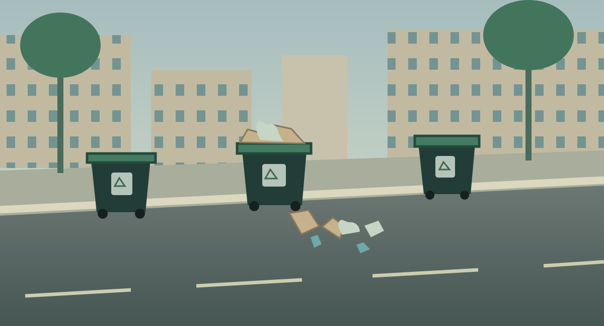

أهلًا بك في نقا
اختر صفتك للمتابعة
اختيار الصفة يخصص العرض التجريبي، ولا يمثل تسجيل دخول أو صلاحيات حقيقية.
اختر صفتك للمتابعة
اختيار الصفة يخصص العرض التجريبي، ولا يمثل تسجيل دخول أو صلاحيات حقيقية.
منصة تجريبية تربط المواطن وفرق النظافة والمراقبة لرصد الملاحظات ومعالجتها.
منصة تجريبية تربط المواطن وفرق النظافة والمراقبة لرصد الملاحظات ومعالجتها.
بيانات تجريبية محفوظة في هذا المتصفح، ولا تُرسل إلى جهة فعلية.ترشيح أحداث النظافة للمراجعة البشرية وتقليل نقل البيانات.
مدينة أنظف بذكاءأضف صورة وموقعًا ووصفًا، وتابع مسار بلاغك.
مراجعة الحالات وإسناد المهام والتحقق من التنفيذ.
مدينة أنظف بذكاءمحاكاة توضيحية، وليست كاميرا أو تحليلًا فعليًا.

سيارات ولوحات افتراضية. تُسجل المخالفات داخل المحاكاة فقط دون غرامات فعلية.
| رقم البلاغ | اللوحة الافتراضية | نوع الملاحظة | الحالة |
|---|
بيانات تجريبية محفوظة في هذا المتصفح، ولا تُرسل إلى جهة فعلية.
بيانات تجريبية محفوظة في هذا المتصفح، ولا تُرسل إلى جهة فعلية.
| رقم البلاغ | نوع الملاحظة | الموقع | الحالة | متابعة |
|---|
بيانات تجريبية محفوظة في هذا المتصفح، ولا تُرسل إلى جهة فعلية.